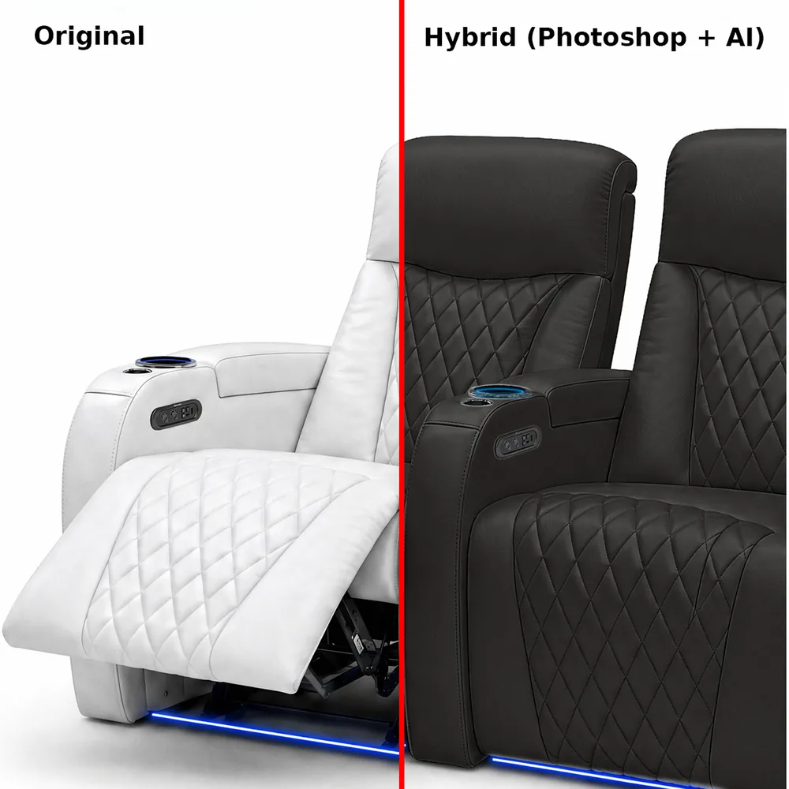
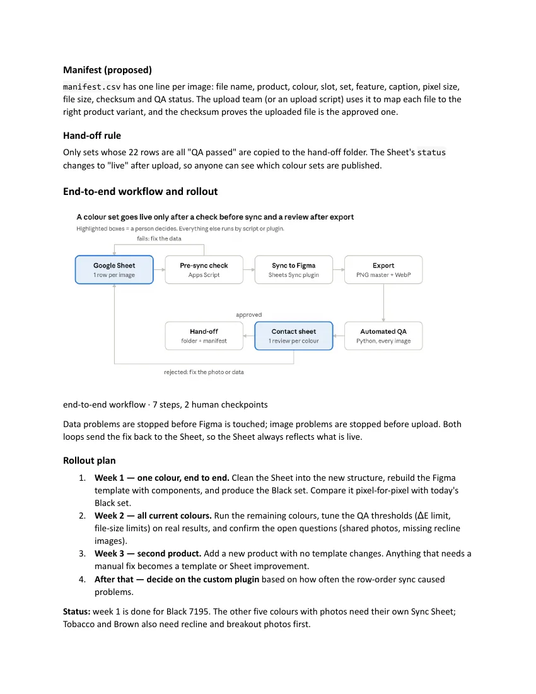
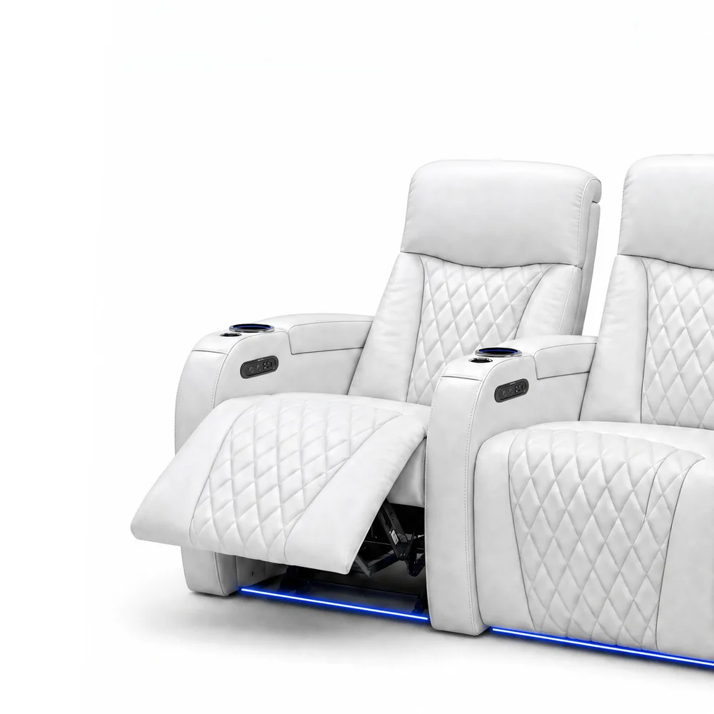
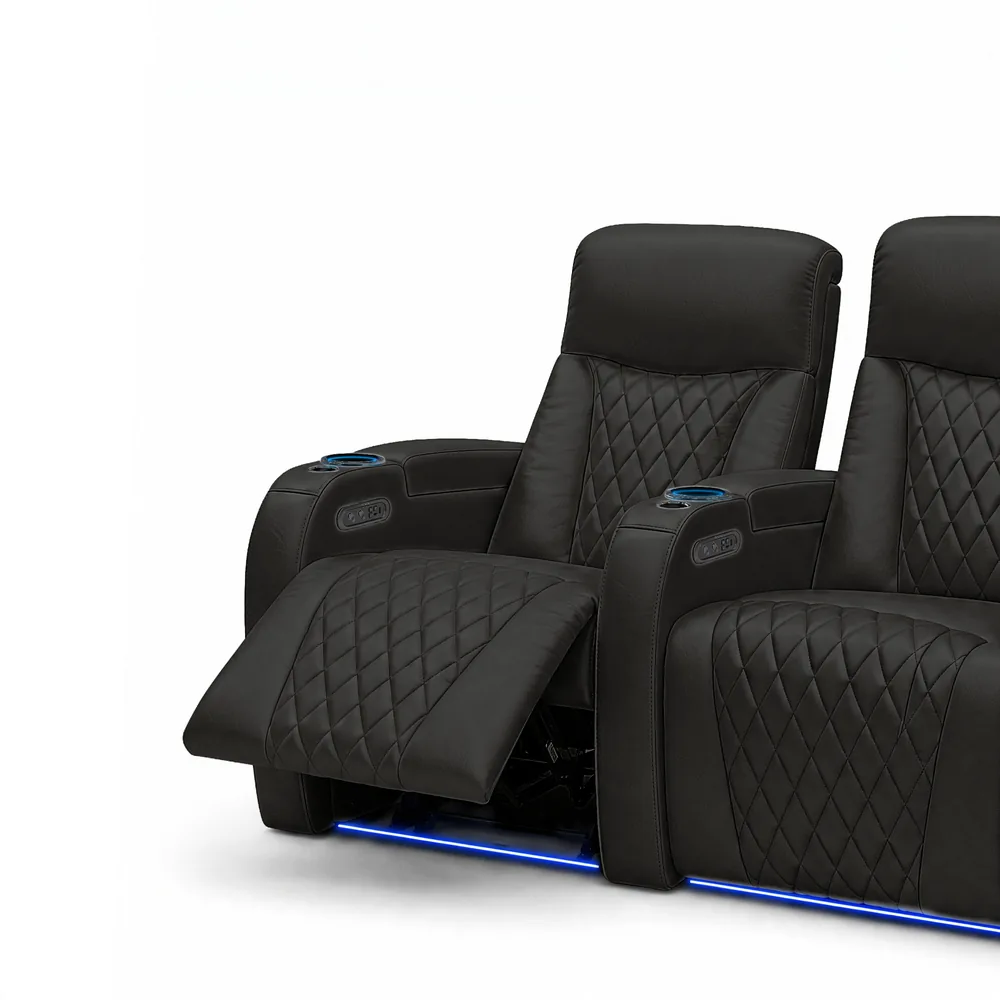
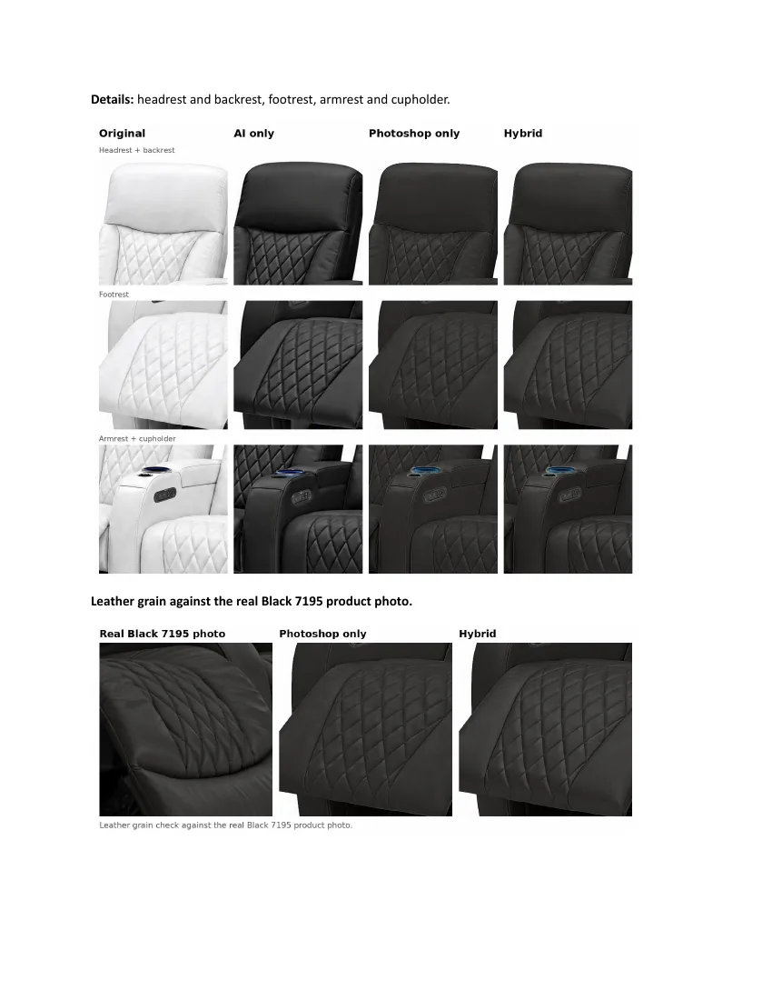
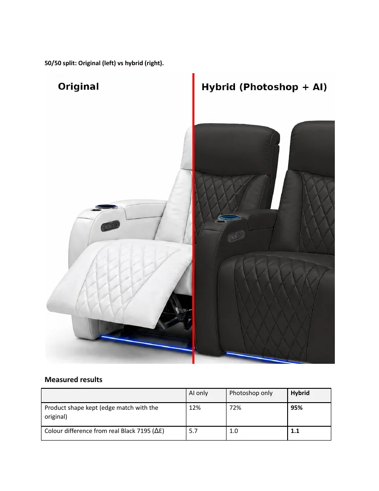

Product image automation and recolor (test task)
An automation plan, a tested workflow and a measured recolor comparison for a home theater seating product, from a Creative Automation Designer test task.

At a glance
Problem
Turn product data into finished, accurate product images in volume. Each product comes in many configurations (colors, materials, options), and much of the imagery was assembled by hand.
My role
I wrote an automation plan, built and tested the workflow for one color set, and recolored product photos from white to Black 7195, comparing AI and Photoshop methods and measuring both.
Delivered
A plan with 10 findings, a Sheet-to-Figma workflow (22 of 22 images for Black 7195), a QA approach, and a measured recolor comparison with a hybrid method.
Part 1: Automation plan
- Make the Google Sheet the single source of truth, with one row per output image.
- Rebuild the Figma file around components (variants, variables, auto layout) so style lives in one place.
- Add a validation step before every sync and an automated QA step after every export.
- The result: adding a color becomes data entry plus one human review, instead of a manual design task.

What I found in the existing files
- 10 concrete issues in the Sheet and the Figma file. The most serious: a side-by-side table that shared rows with a different color list (a red recline photo sat on the black row), and key names that differed between the Sheet and Figma, so layers were skipped silently.
- Mixed image hosting (resized Drive thumbnails and Dropbox links with expiring tokens), duplicated Gallery and Feature rows, captions typed twice, no components, and frame names without a color, so exports would collide.
- A set of 22 images was treated as 11 features in 2 versions; I stated my assumptions and listed open questions for the team.
Proof of concept: built and tested
- An 8-tab data workbook (README, Products, Colours, Features, Images with 176 rows, Sync settings, Sync view, QA summary), with captions, file names and link checks as formulas.
- A Figma template with pages for Readme, Components, Template, Output and Archive, and components for Gallery, Feature, Recline and Breakout tiles.
- Result: 22 of 22 images for Black 7195 produced from the Sheet with Google Sheets Sync, each named after its export file.
- The QA summary flagged the other colors before anyone opened Figma (for example Tobacco and Brown missing recline and breakout photos).
Lessons from the real run
- No images loaded: the plugin only converted Drive share links, so a formula now rewrites every link to the share-link form.
- Text layers hidden: the plugin read the wrong tab of an 8-tab workbook, so each color set gets its own single-tab sync sheet with values.
- Rows applied in an unpredictable order: data layers are now pinned to their row (#image.7 always takes the 7th value).
- Overrides in component instances were lost: the sync fills plain frames, then a script rebuilds each tile as an instance.
- Expiring links: photos were re-hosted in a team Drive folder with the source of each photo recorded.
Quality checks and hand-off
- Layer 1, automated on every image: completeness, size and profile, color against the reference swatch, right photo, text in place, nothing else changed.
- Layer 2, one contact sheet per color, so a full set can be reviewed in about a minute.
- Layer 3, close review only on flagged images.
- Hand-off: PNG master, WebP and JPG web files, a proposed folder structure and a manifest with a checksum for each image.
Part 2: White to Black 7195
I measured the leather in the real Black 7195 photos in CIE Lab, so matching had numbers rather than an eye judgement, then recolored product photos two ways: a Photoshop recolor (masking, Curves mapped to the measured targets, a warm color layer, grain and stitching preserved, LED glow kept) and AI image editing. Every result was checked against the reference.


AI or Photoshop: what I concluded
- AI only redrew the product (about 12% of edges kept), was too glossy and slightly cool (color difference 5.7).
- Photoshop only kept the product (72%) and matched the color (1.0), but looked slightly flat.
- Hybrid: Photoshop controls the product, AI adds the material. It kept 95% of the edges, matched the color (1.1), and the leather got natural depth with a fine grain. A first hybrid pass made the grain too coarse; I caught it in QA and refined it over several rounds.
- For colors customers buy from, the Photoshop-based recipe is the production method; AI is used only where it adds value, with a QA check against the real product.

